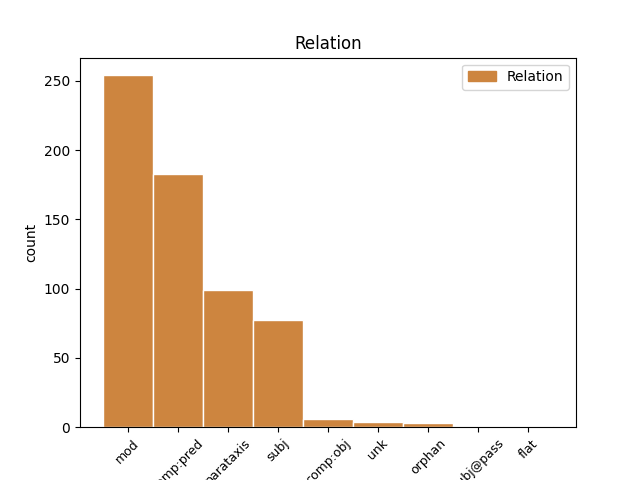
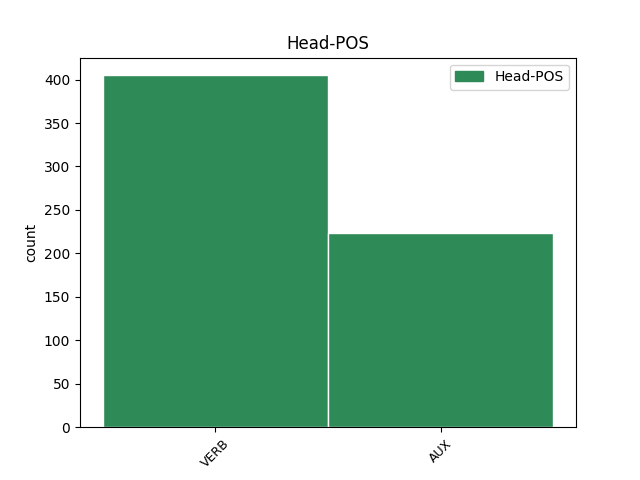
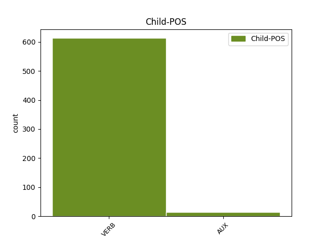

Distribution of features within this leaf



Agreement Rules sorted by frequency.
- When the dependent token is the modifer(mod) of the head token, and the head token is VERB
1 23 _ _ _ _ 0 _ _ _
2 . _ _ _ _ 0 _ _ _
3 Kalendoriniams _ _ _ _ 0 _ _ _
4 metams _ _ _ _ 0 _ _ _
5 pasibaigus _ _ _ _ 0 _ _ _
6 , _ _ _ _ 0 _ _ _
7 Komiteto _ _ _ _ 0 _ _ _
8 sekretorius _ _ _ _ 0 _ _ _
9 turimus _ _ _ _ 0 _ _ _
10 dokumentus _ _ _ _ 0 _ _ _
11 , _ _ _ _ 0 _ _ _
12 susijusius _ _ _ _ 0 _ _ _
13 su _ _ _ _ 0 _ _ _
14 Komiteto _ _ _ _ 0 _ _ _
15 posėdžiais _ _ _ _ 0 _ _ _
16 , _ _ _ _ 0 _ _ _
17 perduoda _ _ _ _ 0 _ _ _
18 saugoti _ _ _ _ 0 _ _ _
19 Aplinkos _ _ _ _ 0 _ _ _
20 ministerijai _ _ _ _ 0 _ _ _
21 , _ _ _ _ 0 _ _ _
22 kur _ _ _ _ 0 _ _ _
23 jie _ _ _ _ 0 _ _ _
24 saugomi saugoti VERB vksm.dlv.neveik.es.vyr.dgs.V. Case=Nom|Definite=Ind|Gender=Masc|Number=Plur|Polarity=Pos|Tense=Pres|VerbForm=Part|Voice=Pass 0 _ _ _
25 5 _ _ _ _ 0 _ _ _
26 metus _ _ _ _ 0 _ _ _
27 , _ _ _ _ 0 _ _ _
28 vadovaujantis vadovautis VERB vksm.pad.sngr.es. Polarity=Pos|Reflex=Yes|Tense=Pres|VerbForm=Ger 24 mod _ _
29 Lietuvos _ _ _ _ 0 _ _ _
30 archyvų _ _ _ _ 0 _ _ _
31 departamento _ _ _ _ 0 _ _ _
32 prie _ _ _ _ 0 _ _ _
33 Lietuvos _ _ _ _ 0 _ _ _
34 Respublikos _ _ _ _ 0 _ _ _
35 Vyriausybės _ _ _ _ 0 _ _ _
36 1997 _ _ _ _ 0 _ _ _
37 m _ _ _ _ 0 _ _ _
38 . _ _ _ _ 0 _ _ _
39 rugpjūčio _ _ _ _ 0 _ _ _
40 15 _ _ _ _ 0 _ _ _
41 d _ _ _ _ 0 _ _ _
42 . _ _ _ _ 0 _ _ _
43 įsakymu _ _ _ _ 0 _ _ _
44 Nr _ _ _ _ 0 _ _ _
45 . _ _ _ _ 0 _ _ _
46 38 _ _ _ _ 0 _ _ _
47 „ _ _ _ _ 0 _ _ _
48 Dėl _ _ _ _ 0 _ _ _
49 bendrųjų _ _ _ _ 0 _ _ _
50 dokumentų _ _ _ _ 0 _ _ _
51 saugojimo _ _ _ _ 0 _ _ _
52 terminų _ _ _ _ 0 _ _ _
53 “ _ _ _ _ 0 _ _ _
54 ( _ _ _ _ 0 _ _ _
55 Žin _ _ _ _ 0 _ _ _
56 . _ _ _ _ 0 _ _ _
57 , _ _ _ _ 0 _ _ _
58 1997 _ _ _ _ 0 _ _ _
59 , _ _ _ _ 0 _ _ _
60 Nr _ _ _ _ 0 _ _ _
61 . _ _ _ _ 0 _ _ _
62 78-006 _ _ _ _ 0 _ _ _
63 ) _ _ _ _ 0 _ _ _
64 . _ _ _ _ 0 _ _ _
1 30 _ _ _ _ 0 _ _ _
2 atvejų _ _ _ _ 0 _ _ _
3 buvo būti AUX vksm.asm.tiesiog.būt-k.3. Aspect=Perf|Mood=Ind|Person=3|Polarity=Pos|Tense=Past|VerbForm=Fin 0 _ _ _
4 atsisakyta atsisakyti VERB vksm.dlv.sngr.neveik.būt.bev. Definite=Ind|Gender=Neut|Polarity=Pos|Reflex=Yes|Tense=Past|VerbForm=Part|Voice=Pass 3 comp:pred _ _
5 išduoti _ _ _ _ 0 _ _ _
6 leidimus _ _ _ _ 0 _ _ _
7 , _ _ _ _ 0 _ _ _
8 nes _ _ _ _ 0 _ _ _
9 nebuvo _ _ _ _ 0 _ _ _
10 galima _ _ _ _ 0 _ _ _
11 daryti _ _ _ _ 0 _ _ _
12 išvados _ _ _ _ 0 _ _ _
13 , _ _ _ _ 0 _ _ _
14 kad _ _ _ _ 0 _ _ _
15 duomenų _ _ _ _ 0 _ _ _
16 valdytojai _ _ _ _ 0 _ _ _
17 tinkamai _ _ _ _ 0 _ _ _
18 įgyvendins _ _ _ _ 0 _ _ _
19 ADTAĮ _ _ _ _ 0 _ _ _
20 reikalavimus _ _ _ _ 0 _ _ _
21 , _ _ _ _ 0 _ _ _
22 nepažeis _ _ _ _ 0 _ _ _
23 duomenų _ _ _ _ 0 _ _ _
24 subjektų _ _ _ _ 0 _ _ _
25 teisių _ _ _ _ 0 _ _ _
26 ir _ _ _ _ 0 _ _ _
27 teisėtų _ _ _ _ 0 _ _ _
28 interesų _ _ _ _ 0 _ _ _
29 bei _ _ _ _ 0 _ _ _
30 užtikrins _ _ _ _ 0 _ _ _
31 tinkamas _ _ _ _ 0 _ _ _
32 duomenų _ _ _ _ 0 _ _ _
33 saugumo _ _ _ _ 0 _ _ _
34 priemones _ _ _ _ 0 _ _ _
35 . _ _ _ _ 0 _ _ _
1 6.2 _ _ _ _ 0 _ _ _
2 . _ _ _ _ 0 _ _ _
3 nagrinėja nagrinėti VERB vksm.asm.tiesiog.es.vns.3. Mood=Ind|Number=Sing|Person=3|Polarity=Pos|Tense=Pres|VerbForm=Fin 10 parataxis _ _
4 ir _ _ _ _ 0 _ _ _
5 vertina _ _ _ _ 0 _ _ _
6 Programos _ _ _ _ 0 _ _ _
7 įgyvendinimo _ _ _ _ 0 _ _ _
8 ataskaitas _ _ _ _ 0 _ _ _
9 , _ _ _ _ 0 _ _ _
10 teikia teikti VERB vksm.asm.tiesiog.es.vns.3. Mood=Ind|Number=Sing|Person=3|Polarity=Pos|Tense=Pres|VerbForm=Fin 0 _ _ _
11 pasiūlymus _ _ _ _ 0 _ _ _
12 Aplinkos _ _ _ _ 0 _ _ _
13 ministerijai _ _ _ _ 0 _ _ _
14 dėl _ _ _ _ 0 _ _ _
15 Programos _ _ _ _ 0 _ _ _
16 ir _ _ _ _ 0 _ _ _
17 jos _ _ _ _ 0 _ _ _
18 įgyvendinimo _ _ _ _ 0 _ _ _
19 teisės _ _ _ _ 0 _ _ _
20 aktų _ _ _ _ 0 _ _ _
21 pakeitimo _ _ _ _ 0 _ _ _
22 ar _ _ _ _ 0 _ _ _
23 papildymo _ _ _ _ 0 _ _ _
24 ; _ _ _ _ 0 _ _ _
1 Toks _ _ _ _ 0 _ _ _
2 pokalbių _ _ _ _ 0 _ _ _
3 įrašymas _ _ _ _ 0 _ _ _
4 pažeidžia _ _ _ _ 0 _ _ _
5 Lietuvos _ _ _ _ 0 _ _ _
6 Respublikos _ _ _ _ 0 _ _ _
7 elektroninių _ _ _ _ 0 _ _ _
8 ryšių _ _ _ _ 0 _ _ _
9 įstatymo _ _ _ _ 0 _ _ _
10 63 _ _ _ _ 0 _ _ _
11 str _ _ _ _ 0 _ _ _
12 . _ _ _ _ 0 _ _ _
13 1 _ _ _ _ 0 _ _ _
14 d _ _ _ _ 0 _ _ _
15 . _ _ _ _ 0 _ _ _
16 reikalavimus _ _ _ _ 0 _ _ _
17 , _ _ _ _ 0 _ _ _
18 nes _ _ _ _ 0 _ _ _
19 pokalbiams _ _ _ _ 0 _ _ _
20 įrašyti _ _ _ _ 0 _ _ _
21 nėra nebūti VERB vksm.asm.neig.tiesiog.es.vns.3. Mood=Ind|Number=Sing|Person=3|Polarity=Neg|Tense=Pres|VerbForm=Fin 22 subj _ _
22 gaunamas gauti VERB vksm.dlv.neveik.es.vyr.vns.V. Case=Nom|Definite=Ind|Gender=Masc|Number=Sing|Polarity=Pos|Tense=Pres|VerbForm=Part|Voice=Pass 0 _ _ _
23 skambinančio _ _ _ _ 0 _ _ _
24 asmens _ _ _ _ 0 _ _ _
25 sutikimas _ _ _ _ 0 _ _ _
26 . _ _ _ _ 0 _ _ _
1 Inspekcijos _ _ _ _ 0 _ _ _
2 direktoriaus _ _ _ _ 0 _ _ _
3 įsakymais _ _ _ _ 0 _ _ _
4 patvirtintos _ _ _ _ 0 _ _ _
5 Išankstinės _ _ _ _ 0 _ _ _
6 patikros _ _ _ _ 0 _ _ _
7 atlikimo _ _ _ _ 0 _ _ _
8 taisyklės _ _ _ _ 0 _ _ _
9 , _ _ _ _ 0 _ _ _
10 Reikalavimai _ _ _ _ 0 _ _ _
11 duomenų _ _ _ _ 0 _ _ _
12 apsaugos _ _ _ _ 0 _ _ _
13 priemonių _ _ _ _ 0 _ _ _
14 aprašui _ _ _ _ 0 _ _ _
15 ir _ _ _ _ 0 _ _ _
16 Duomenų _ _ _ _ 0 _ _ _
17 apsaugos _ _ _ _ 0 _ _ _
18 priemonių _ _ _ _ 0 _ _ _
19 aprašas _ _ _ _ 0 _ _ _
20 buvo būti AUX vksm.asm.tiesiog.būt-k.dgs.3. Aspect=Perf|Mood=Ind|Number=Plur|Person=3|Polarity=Pos|Tense=Past|VerbForm=Fin 0 _ _ _
21 papildyti _ _ _ _ 0 _ _ _
22 atsižvelgus atsižvelgti VERB vksm.pad.sngr.būt-k. Aspect=Perf|Polarity=Pos|Reflex=Yes|Tense=Past|VerbForm=Ger 20 mod _ _
23 į _ _ _ _ 0 _ _ _
24 tai _ _ _ _ 0 _ _ _
25 , _ _ _ _ 0 _ _ _
26 kad _ _ _ _ 0 _ _ _
27 buvo _ _ _ _ 0 _ _ _
28 pakeisti _ _ _ _ 0 _ _ _
29 Asmens _ _ _ _ 0 _ _ _
30 duomenų _ _ _ _ 0 _ _ _
31 valdytojų _ _ _ _ 0 _ _ _
32 valstybės _ _ _ _ 0 _ _ _
33 registro _ _ _ _ 0 _ _ _
34 nuostatai _ _ _ _ 0 _ _ _
35 bei _ _ _ _ 0 _ _ _
36 Duomenų _ _ _ _ 0 _ _ _
37 valdytojų _ _ _ _ 0 _ _ _
38 pranešimo _ _ _ _ 0 _ _ _
39 apie _ _ _ _ 0 _ _ _
40 asmens _ _ _ _ 0 _ _ _
41 duomenų _ _ _ _ 0 _ _ _
42 tvarkymą _ _ _ _ 0 _ _ _
43 taisyklės _ _ _ _ 0 _ _ _
44 . _ _ _ _ 0 _ _ _
1 Dar _ _ _ _ 0 _ _ _
2 vienas _ _ _ _ 0 _ _ _
3 svarbus _ _ _ _ 0 _ _ _
4 ankstesnių _ _ _ _ 0 _ _ _
5 klasifikacijų _ _ _ _ 0 _ _ _
6 trūkumas _ _ _ _ 0 _ _ _
7 , _ _ _ _ 0 _ _ _
8 kurį _ _ _ _ 0 _ _ _
9 pastebi _ _ _ _ 0 _ _ _
10 R _ _ _ _ 0 _ _ _
11 . _ _ _ _ 0 _ _ _
12 Marcinkevičienė _ _ _ _ 0 _ _ _
13 , _ _ _ _ 0 _ _ _
14 yra būti AUX vksm.asm.tiesiog.es.vns.3. Mood=Ind|Number=Sing|Person=3|Polarity=Pos|Tense=Pres|VerbForm=Fin 0 _ _ _
15 hierarchinis _ _ _ _ 0 _ _ _
16 pristatomų _ _ _ _ 0 _ _ _
17 žanrų _ _ _ _ 0 _ _ _
18 netolygumas _ _ _ _ 0 _ _ _
19 : _ _ _ _ 0 _ _ _
20 kai _ _ _ _ 0 _ _ _
21 kurios _ _ _ _ 0 _ _ _
22 kategorijos _ _ _ _ 0 _ _ _
23 yra būti AUX vksm.asm.tiesiog.es.vns.3. Mood=Ind|Number=Sing|Person=3|Polarity=Pos|Tense=Pres|VerbForm=Fin 14 parataxis _ _
24 per _ _ _ _ 0 _ _ _
25 plačios _ _ _ _ 0 _ _ _
26 , _ _ _ _ 0 _ _ _
27 o _ _ _ _ 0 _ _ _
28 kai _ _ _ _ 0 _ _ _
29 kurios _ _ _ _ 0 _ _ _
30 – _ _ _ _ 0 _ _ _
31 per _ _ _ _ 0 _ _ _
32 siauros _ _ _ _ 0 _ _ _
33 , _ _ _ _ 0 _ _ _
34 kad _ _ _ _ 0 _ _ _
35 galėtų _ _ _ _ 0 _ _ _
36 vadintis _ _ _ _ 0 _ _ _
37 žanrais _ _ _ _ 0 _ _ _
38 . _ _ _ _ 0 _ _ _
1 Autorė _ _ _ _ 0 _ _ _
2 tiesiog _ _ _ _ 0 _ _ _
3 preciziškai _ _ _ _ 0 _ _ _
4 aptaria aptarti VERB vksm.asm.tiesiog.es.vns.3. Mood=Ind|Number=Sing|Person=3|Polarity=Pos|Tense=Pres|VerbForm=Fin 0 _ _ _
5 terminus _ _ _ _ 0 _ _ _
6 , _ _ _ _ 0 _ _ _
7 kurie _ _ _ _ 0 _ _ _
8 yra _ _ _ _ 0 _ _ _
9 ne _ _ _ _ 0 _ _ _
10 tik _ _ _ _ 0 _ _ _
11 aiškiai _ _ _ _ 0 _ _ _
12 apibrėžiami _ _ _ _ 0 _ _ _
13 , _ _ _ _ 0 _ _ _
14 bet _ _ _ _ 0 _ _ _
15 pateikiama pateikti VERB vksm.dlv.neveik.es.mot.vns.V. Case=Nom|Definite=Ind|Gender=Fem|Number=Sing|Polarity=Pos|Tense=Pres|VerbForm=Part|Voice=Pass 4 comp:obj _ _
16 ir _ _ _ _ 0 _ _ _
17 jų _ _ _ _ 0 _ _ _
18 kilmė _ _ _ _ 0 _ _ _
19 bei _ _ _ _ 0 _ _ _
20 trumpa _ _ _ _ 0 _ _ _
21 istorija _ _ _ _ 0 _ _ _
22 , _ _ _ _ 0 _ _ _
23 kas _ _ _ _ 0 _ _ _
24 padeda _ _ _ _ 0 _ _ _
25 geriau _ _ _ _ 0 _ _ _
26 suprasti _ _ _ _ 0 _ _ _
27 terminą _ _ _ _ 0 _ _ _
28 . _ _ _ _ 0 _ _ _
1 4 _ _ _ _ 0 _ _ _
2 . _ _ _ _ 0 _ _ _
3 Įmonės _ _ _ _ 0 _ _ _
4 gali galėti VERB vksm.asm.tiesiog.es.dgs.3. Mood=Ind|Number=Plur|Person=3|Polarity=Pos|Tense=Pres|VerbForm=Fin 0 _ _ _
5 deklaruoti _ _ _ _ 0 _ _ _
6 esančios būti VERB vksm.dlv.veik.es.mot.dgs.V. Case=Nom|Definite=Ind|Gender=Fem|Number=Plur|Polarity=Pos|Tense=Pres|VerbForm=Part|Voice=Act 4 comp:pred _ _
7 vidutinės _ _ _ _ 0 _ _ _
8 , _ _ _ _ 0 _ _ _
9 mažos _ _ _ _ 0 _ _ _
10 ar _ _ _ _ 0 _ _ _
11 labai _ _ _ _ 0 _ _ _
12 mažos _ _ _ _ 0 _ _ _
13 įmonės _ _ _ _ 0 _ _ _
14 nuo _ _ _ _ 0 _ _ _
15 jų _ _ _ _ 0 _ _ _
16 įsteigimo _ _ _ _ 0 _ _ _
17 dienos _ _ _ _ 0 _ _ _
18 . _ _ _ _ 0 _ _ _
1 2 _ _ _ _ 0 _ _ _
2 ) _ _ _ _ 0 _ _ _
3 Planuota _ _ _ _ 0 _ _ _
4 atlikti _ _ _ _ 0 _ _ _
5 400 _ _ _ _ 0 _ _ _
6 prevencinių _ _ _ _ 0 _ _ _
7 tikrinimų _ _ _ _ 0 _ _ _
8 ir _ _ _ _ 0 _ _ _
9 parengti _ _ _ _ 0 _ _ _
10 išvadų _ _ _ _ 0 _ _ _
11 dėl _ _ _ _ 0 _ _ _
12 išankstinės _ _ _ _ 0 _ _ _
13 patikros _ _ _ _ 0 _ _ _
14 – _ _ _ _ 0 _ _ _
15 atlikta atlikti VERB vksm.dlv.neveik.būt.bev. Definite=Ind|Gender=Neut|Polarity=Pos|Tense=Past|VerbForm=Part|Voice=Pass 0 _ _ _
16 402 _ _ _ _ 0 _ _ _
17 ( _ _ _ _ 0 _ _ _
18 parengta parengti VERB vksm.dlv.neveik.būt.bev. Definite=Ind|Gender=Neut|Polarity=Pos|Tense=Past|VerbForm=Part|Voice=Pass 15 unk _ _
19 310 _ _ _ _ 0 _ _ _
20 išvadų _ _ _ _ 0 _ _ _
21 dėl _ _ _ _ 0 _ _ _
22 išankstinės _ _ _ _ 0 _ _ _
23 patikros _ _ _ _ 0 _ _ _
24 , _ _ _ _ 0 _ _ _
25 atlikti _ _ _ _ 0 _ _ _
26 92 _ _ _ _ 0 _ _ _
27 prevenciniai _ _ _ _ 0 _ _ _
28 tikrinimai _ _ _ _ 0 _ _ _
29 ) _ _ _ _ 0 _ _ _
30 . _ _ _ _ 0 _ _ _
1 Kita _ _ _ _ 0 _ _ _
2 vertus _ _ _ _ 0 _ _ _
3 , _ _ _ _ 0 _ _ _
4 griežtai _ _ _ _ 0 _ _ _
5 laikantis _ _ _ _ 0 _ _ _
6 statistinio _ _ _ _ 0 _ _ _
7 reprezentatyvumo _ _ _ _ 0 _ _ _
8 , _ _ _ _ 0 _ _ _
9 viename _ _ _ _ 0 _ _ _
10 tyrime _ _ _ _ 0 _ _ _
11 imti imti VERB vksm.dlv.neveik.būt.vyr.dgs.V. Case=Nom|Definite=Ind|Gender=Masc|Number=Plur|Polarity=Pos|Tense=Past|VerbForm=Part|Voice=Pass 0 _ _ _
12 emigracijoje _ _ _ _ 0 _ _ _
13 buvusieji būti VERB vksm.dlv.veik.būt-k.įvardž.vyr.dgs.V. Aspect=Perf|Case=Nom|Definite=Def|Gender=Masc|Number=Plur|Polarity=Pos|Tense=Past|VerbForm=Part|Voice=Act 11 subj@pass _ _
14 metus _ _ _ _ 0 _ _ _
15 ir _ _ _ _ 0 _ _ _
16 daugiau _ _ _ _ 0 _ _ _
17 , _ _ _ _ 0 _ _ _
18 visuose _ _ _ _ 0 _ _ _
19 kituose _ _ _ _ 0 _ _ _
20 – _ _ _ _ 0 _ _ _
21 pusę _ _ _ _ 0 _ _ _
22 metų _ _ _ _ 0 _ _ _
23 . _ _ _ _ 0 _ _ _
1 Paliekant _ _ _ _ 0 _ _ _
2 galimybes _ _ _ _ 0 _ _ _
3 tiriamajam tirti VERB vksm.dlv.neveik.es.įvardž.vyr.vns.N. Case=Dat|Definite=Def|Gender=Masc|Number=Sing|Polarity=Pos|Tense=Pres|VerbForm=Part|Voice=Pass 0 _ _ _
4 ( _ _ _ _ 0 _ _ _
5 tiriamiesiems tirti VERB vksm.dlv.neveik.es.įvardž.vyr.dgs.N. Case=Dat|Definite=Def|Gender=Masc|Number=Plur|Polarity=Pos|Tense=Pres|VerbForm=Part|Voice=Pass 3 flat _ SpaceAfter=No
6 ) _ _ _ _ 0 _ _ _
7 konstruoti _ _ _ _ 0 _ _ _
8 / _ _ _ _ 0 _ _ _
9 rekonstruoti _ _ _ _ 0 _ _ _
10 kuriamą _ _ _ _ 0 _ _ _
11 šeimos _ _ _ _ 0 _ _ _
12 modelį _ _ _ _ 0 _ _ _
13 , _ _ _ _ 0 _ _ _
14 gaunama _ _ _ _ 0 _ _ _
15 informacija _ _ _ _ 0 _ _ _
16 apie _ _ _ _ 0 _ _ _
17 individualias _ _ _ _ 0 _ _ _
18 šeiminio _ _ _ _ 0 _ _ _
19 gyvenimo _ _ _ _ 0 _ _ _
20 koncepcijas _ _ _ _ 0 _ _ _
21 , _ _ _ _ 0 _ _ _
22 o _ _ _ _ 0 _ _ _
23 tai _ _ _ _ 0 _ _ _
24 leidžia _ _ _ _ 0 _ _ _
25 spręsti _ _ _ _ 0 _ _ _
26 apie _ _ _ _ 0 _ _ _
27 jų _ _ _ _ 0 _ _ _
28 atitikimą _ _ _ _ 0 _ _ _
29 ( _ _ _ _ 0 _ _ _
30 ar _ _ _ _ 0 _ _ _
31 neatitikimą _ _ _ _ 0 _ _ _
32 ) _ _ _ _ 0 _ _ _
33 normatyvinei _ _ _ _ 0 _ _ _
34 sampratai _ _ _ _ 0 _ _ _
35 . _ _ _ _ 0 _ _ _
1 O _ _ _ _ 0 _ _ _
2 aš _ _ _ _ 0 _ _ _
3 nieko _ _ _ _ 0 _ _ _
4 , _ _ _ _ 0 _ _ _
5 sėdžiu sėdėti VERB vksm.asm.tiesiog.es.vns.1. Mood=Ind|Number=Sing|Person=1|Polarity=Pos|Tense=Pres|VerbForm=Fin 0 _ _ _
6 prie _ _ _ _ 0 _ _ _
7 lango _ _ _ _ 0 _ _ _
8 ir _ _ _ _ 0 _ _ _
9 bandau bandyti VERB vksm.asm.tiesiog.es.vns.1. Mood=Ind|Number=Sing|Person=1|Polarity=Pos|Tense=Pres|VerbForm=Fin 5 orphan _ _
10 išpūsti _ _ _ _ 0 _ _ _
11 dramblio _ _ _ _ 0 _ _ _
12 formos _ _ _ _ 0 _ _ _
13 tabako _ _ _ _ 0 _ _ _
14 debesį _ _ _ _ 0 _ _ _
15 . _ _ _ _ 0 _ _ _
1 Visuomet _ _ _ _ 0 _ _ _
2 jaučiuosi jaustis VERB vksm.asm.sngr.tiesiog.es.vns.1. Mood=Ind|Number=Sing|Person=1|Polarity=Pos|Reflex=Yes|Tense=Pres|VerbForm=Fin 3 subj _ _
3 esąs būti AUX vksm.dlv.veik.es.vyr.vns.V. Case=Nom|Definite=Ind|Gender=Masc|Number=Sing|Polarity=Pos|Tense=Pres|VerbForm=Part|Voice=Act 0 _ _ _
4 tik _ _ _ _ 0 _ _ _
5 priedas _ _ _ _ 0 _ _ _
6 jų _ _ _ _ 0 _ _ _
7 salonuose _ _ _ _ 0 _ _ _
8 . _ _ _ _ 0 _ _ _
Disagree Examples:
1 ŠMM _ _ _ _ 0 _ _ _
2 sekretorius _ _ _ _ 0 _ _ _
3 pabrėžė _ _ _ _ 0 _ _ _
4 , _ _ _ _ 0 _ _ _
5 kad _ _ _ _ 0 _ _ _
6 planuojamoje _ _ _ _ 0 _ _ _
7 aukštojo _ _ _ _ 0 _ _ _
8 mokslo _ _ _ _ 0 _ _ _
9 reformoje _ _ _ _ 0 _ _ _
10 įsigaliojus įsigalioti VERB vksm.pad.sngr.būt-k. Aspect=Perf|Polarity=Pos|Reflex=Yes|Tense=Past|VerbForm=Ger 18 mod _ _
11 Mokslo _ _ _ _ 0 _ _ _
12 ir _ _ _ _ 0 _ _ _
13 studijų _ _ _ _ 0 _ _ _
14 įstatymui _ _ _ _ 0 _ _ _
15 aukštųjų _ _ _ _ 0 _ _ _
16 mokyklų _ _ _ _ 0 _ _ _
17 tarybos _ _ _ _ 0 _ _ _
18 nustatys nustatyti VERB vksm.asm.tiesiog.būs.dgs.3. Mood=Ind|Number=Plur|Person=3|Polarity=Pos|Tense=Fut|VerbForm=Fin 0 _ _ _
19 vadovų _ _ _ _ 0 _ _ _
20 atlyginimus _ _ _ _ 0 _ _ _
21 ir _ _ _ _ 0 _ _ _
22 tai _ _ _ _ 0 _ _ _
23 leis _ _ _ _ 0 _ _ _
24 atsirasti _ _ _ _ 0 _ _ _
25 dar _ _ _ _ 0 _ _ _
26 daugiau _ _ _ _ 0 _ _ _
27 skaidrumo _ _ _ _ 0 _ _ _
28 . _ _ _ _ 0 _ _ _
1 Kitas _ _ _ _ 0 _ _ _
2 dalykas _ _ _ _ 0 _ _ _
3 - _ _ _ _ 0 _ _ _
4 visų _ _ _ _ 0 _ _ _
5 pagrindai _ _ _ _ 0 _ _ _
6 yra būti AUX vksm.asm.tiesiog.es.dgs.3. Mood=Ind|Number=Plur|Person=3|Polarity=Pos|Tense=Pres|VerbForm=Fin 0 _ _ _
7 nustatyti nustatyti VERB vksm.dlv.neveik.būt.vyr.dgs.V. Case=Nom|Definite=Ind|Gender=Masc|Number=Plur|Polarity=Pos|Tense=Past|VerbForm=Part|Voice=Pass 6 subj _ _
8 vienodi _ _ _ _ 0 _ _ _
9 , _ _ _ _ 0 _ _ _
10 o _ _ _ _ 0 _ _ _
11 universitetai _ _ _ _ 0 _ _ _
12 , _ _ _ _ 0 _ _ _
13 mokslo _ _ _ _ 0 _ _ _
14 įstaigos _ _ _ _ 0 _ _ _
15 ar _ _ _ _ 0 _ _ _
16 mokslo _ _ _ _ 0 _ _ _
17 institucijos _ _ _ _ 0 _ _ _
18 yra _ _ _ _ 0 _ _ _
19 labai _ _ _ _ 0 _ _ _
20 skirtingos _ _ _ _ 0 _ _ _
21 . _ _ _ _ 0 _ _ _
1 Net _ _ _ _ 0 _ _ _
2 keista _ _ _ _ 0 _ _ _
3 , _ _ _ _ 0 _ _ _
4 turint turėti VERB sampl.vksm.pad.es. Hyph=Yes|Polarity=Pos|Tense=Pres|VerbForm=Ger 0 _ _ _
5 omeny _ _ _ _ 0 _ _ _
6 , _ _ _ _ 0 _ _ _
7 kiek _ _ _ _ 0 _ _ _
8 vietos _ _ _ _ 0 _ _ _
9 istorijoje _ _ _ _ 0 _ _ _
10 skirta skirti VERB vksm.dlv.neveik.būt.bev. Definite=Ind|Gender=Neut|Polarity=Pos|Tense=Past|VerbForm=Part|Voice=Pass 4 mod _ _
11 tarptautiniams _ _ _ _ 0 _ _ _
12 santykiams _ _ _ _ 0 _ _ _
13 , _ _ _ _ 0 _ _ _
14 kad _ _ _ _ 0 _ _ _
15 neišryškintas _ _ _ _ 0 _ _ _
16 toks _ _ _ _ 0 _ _ _
17 svarbus _ _ _ _ 0 _ _ _
18 Lietuvos _ _ _ _ 0 _ _ _
19 – _ _ _ _ 0 _ _ _
20 SSRS _ _ _ _ 0 _ _ _
21 santykių _ _ _ _ 0 _ _ _
22 raidai _ _ _ _ 0 _ _ _
23 veiksnys _ _ _ _ 0 _ _ _
24 kaip _ _ _ _ 0 _ _ _
25 teisinis _ _ _ _ 0 _ _ _
26 dialogas _ _ _ _ 0 _ _ _
27 tarp _ _ _ _ 0 _ _ _
28 Lietuvos _ _ _ _ 0 _ _ _
29 ir _ _ _ _ 0 _ _ _
30 Maskvos _ _ _ _ 0 _ _ _
31 . _ _ _ _ 0 _ _ _
1 Lietuvos _ _ _ _ 0 _ _ _
2 ir _ _ _ _ 0 _ _ _
3 Sąjūdžio _ _ _ _ 0 _ _ _
4 atsakymais _ _ _ _ 0 _ _ _
5 į _ _ _ _ 0 _ _ _
6 tokius _ _ _ _ 0 _ _ _
7 siekius _ _ _ _ 0 _ _ _
8 ar _ _ _ _ 0 _ _ _
9 net _ _ _ _ 0 _ _ _
10 kalbas _ _ _ _ 0 _ _ _
11 apie _ _ _ _ 0 _ _ _
12 juos _ _ _ _ 0 _ _ _
13 dažniausiai _ _ _ _ 0 _ _ _
14 būdavo _ _ _ _ 0 _ _ _
15 bandymai _ _ _ _ 0 _ _ _
16 šias _ _ _ _ 0 _ _ _
17 reformas _ _ _ _ 0 _ _ _
18 blokuoti _ _ _ _ 0 _ _ _
19 Lietuvos _ _ _ _ 0 _ _ _
20 įstatymais _ _ _ _ 0 _ _ _
21 , _ _ _ _ 0 _ _ _
22 priimtais _ _ _ _ 0 _ _ _
23 anksčiau _ _ _ _ 0 _ _ _
24 nei _ _ _ _ 0 _ _ _
25 tai _ _ _ _ 0 _ _ _
26 padarydavo _ _ _ _ 0 _ _ _
27 Maskva _ _ _ _ 0 _ _ _
28 ( _ _ _ _ 0 _ _ _
29 taip _ _ _ _ 0 _ _ _
30 buvo _ _ _ _ 0 _ _ _
31 su _ _ _ _ 0 _ _ _
32 70 _ _ _ _ 0 _ _ _
33 straipsnio _ _ _ _ 0 _ _ _
34 keitimu _ _ _ _ 0 _ _ _
35 , _ _ _ _ 0 _ _ _
36 taip _ _ _ _ 0 _ _ _
37 nutiko nutikti VERB vksm.asm.tiesiog.būt-k.3. Aspect=Perf|Mood=Ind|Person=3|Polarity=Pos|Tense=Past|VerbForm=Fin 0 _ _ _
38 ir _ _ _ _ 0 _ _ _
39 priimant priimti VERB vksm.pad.es. Polarity=Pos|Tense=Pres|VerbForm=Ger 37 mod _ _
40 Kovo _ _ _ _ 0 _ _ _
41 11-osios _ _ _ _ 0 _ _ _
42 aktą _ _ _ _ 0 _ _ _
43 ) _ _ _ _ 0 _ _ _
44 . _ _ _ _ 0 _ _ _
1 Kai _ _ _ _ 0 _ _ _
2 kurie _ _ _ _ 0 _ _ _
3 teiginiai _ _ _ _ 0 _ _ _
4 gana _ _ _ _ 0 _ _ _
5 ginčytini _ _ _ _ 0 _ _ _
6 , _ _ _ _ 0 _ _ _
7 pavyzdžiui _ _ _ _ 0 _ _ _
8 , _ _ _ _ 0 _ _ _
9 sakinys _ _ _ _ 0 _ _ _
10 : _ _ _ _ 0 _ _ _
11 Sąjūdžio _ _ _ _ 0 _ _ _
12 „ _ _ _ _ 0 _ _ _
13 Iniciatyvinė _ _ _ _ 0 _ _ _
14 grupė _ _ _ _ 0 _ _ _
15 , _ _ _ _ 0 _ _ _
16 galima galėti VERB vksm.dlv.neveik.es.bev. Definite=Ind|Gender=Neut|Polarity=Pos|Tense=Pres|VerbForm=Part|Voice=Pass 19 parataxis _ _
17 sakyti _ _ _ _ 0 _ _ _
18 , _ _ _ _ 0 _ _ _
19 atstovavo atstovauti VERB vksm.asm.tiesiog.būt-k.vns.3. Aspect=Perf|Mood=Ind|Number=Sing|Person=3|Polarity=Pos|Tense=Past|VerbForm=Fin 0 _ _ _
20 Tarybų _ _ _ _ 0 _ _ _
21 Lietuvos _ _ _ _ 0 _ _ _
22 identitetui _ _ _ _ 0 _ _ _
23 “ _ _ _ _ 0 _ _ _
24 . _ _ _ _ 0 _ _ _